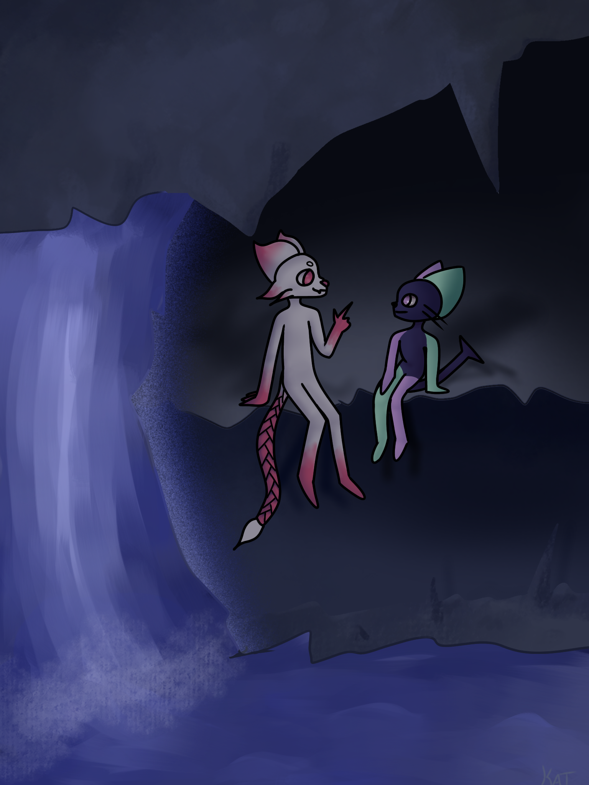
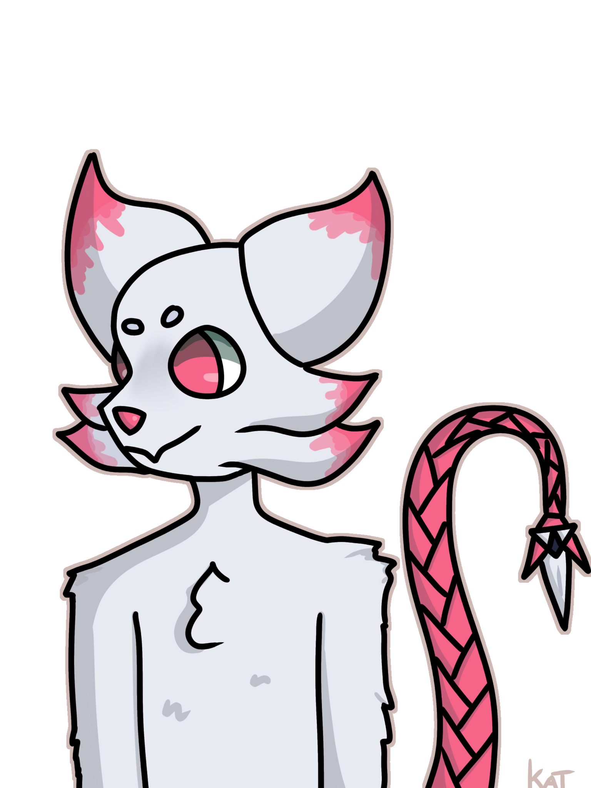
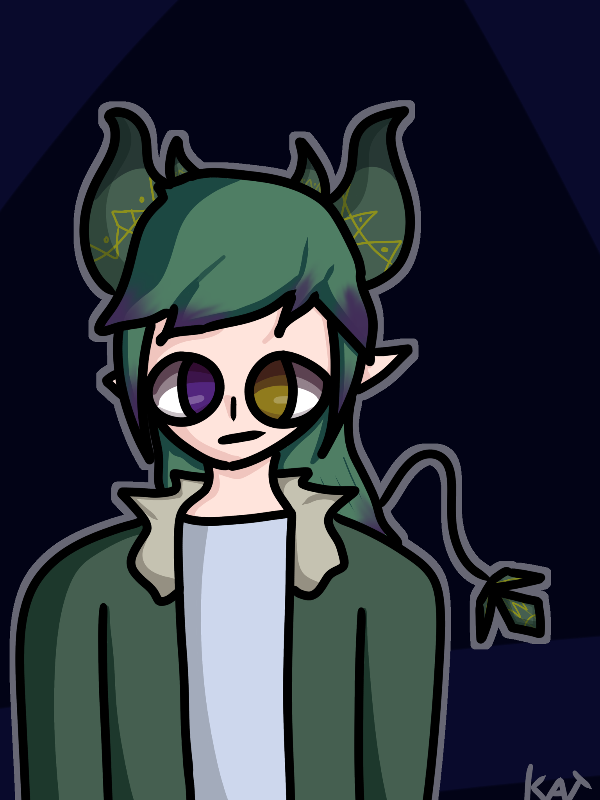
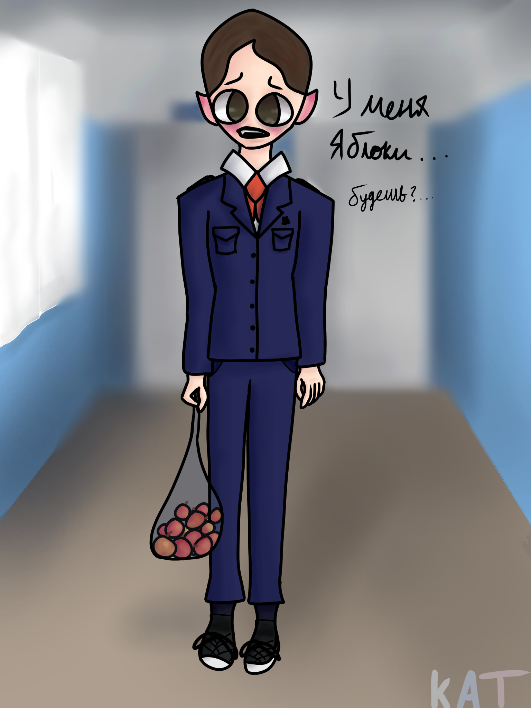
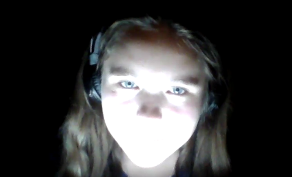

kattree's Artwork
New Art!




About Me
My name is Natalie, but I usually sign all my artworks under the name kattree. That's with a lowercase k! I grew up in a small town in the middle of nowhere. I started drawing whenever I was about 11 or 12. My first pieces were from this game called Animal Jam. I met a little community of artists which inspired me to keep drawing. Unlike most artists, I never really followed after a single style to help me learn, which means that my art style is completely my own. Slowly over these 10 years I have improved. These days I will usually draw my own characters or the various things that I am interested in. Also almost everything is drawn with my finger ^-^